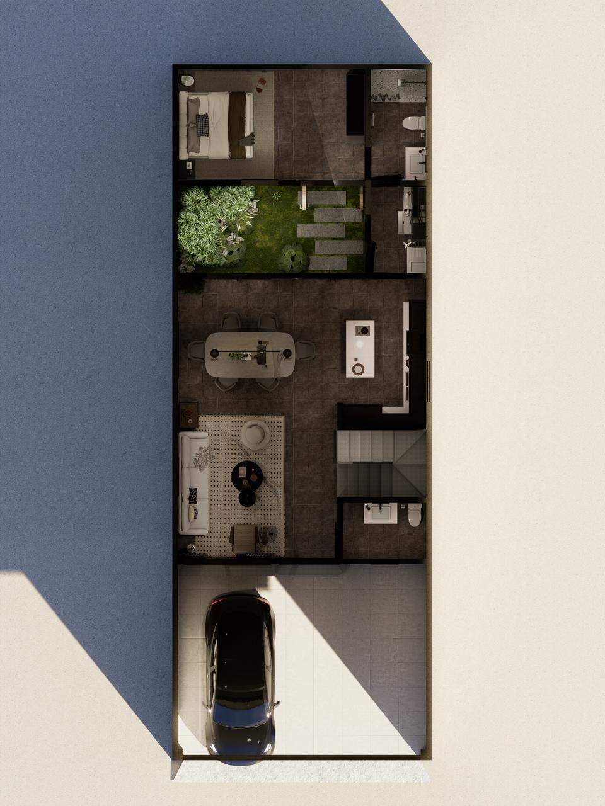

Residencial Las Flores · Ciudad Vieja
Casa de las Flores
Residencia en construcción a 15 minutos de Antigua Guatemala, con 237 m2, jardín interior, balcón y vista hacia los volcanes de Fuego y Acatenango.

Por qué destaca
Diseñada para vivir Antigua sin perder comodidad diaria.
Ubicación con crecimiento
Ciudad Vieja conecta rápido con Antigua Guatemala, Escuintla y Chimaltenango, manteniendo acceso a colegios, comercio y servicios esenciales.
Arquitectura funcional
La habitación en planta baja con baño privado abre la casa a visitas, adultos mayores o una oficina independiente.
Luz, ventilación y jardín
El jardín interior ordena la experiencia de la casa: refresca, ilumina y conecta los ambientes sociales con naturaleza.
Vista a volcanes
La máster, el balcón, la terraza y la azotea aprovechan la vista hacia Fuego y Acatenango para convertir la casa en experiencia.
Entorno
A 15 minutos de Antigua Guatemala.
Una ubicación pensada para quien quiere plusvalía, conexión regional y una vida más tranquila cerca de naturaleza, colegios y servicios.
Siguiente paso
Agenda una visita con contexto claro.
El comprador ya llega entendiendo la distribución, los ambientes clave y la propuesta de valor de la propiedad.